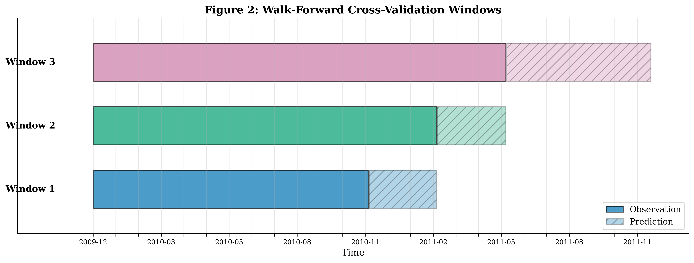
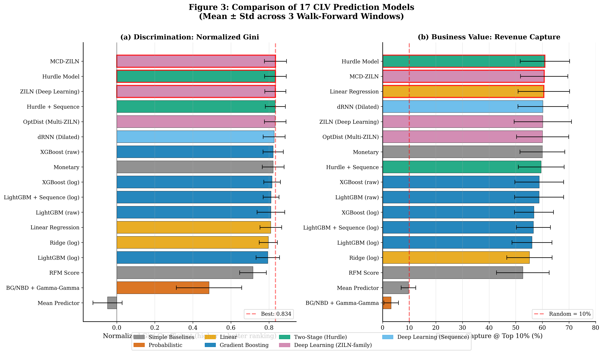
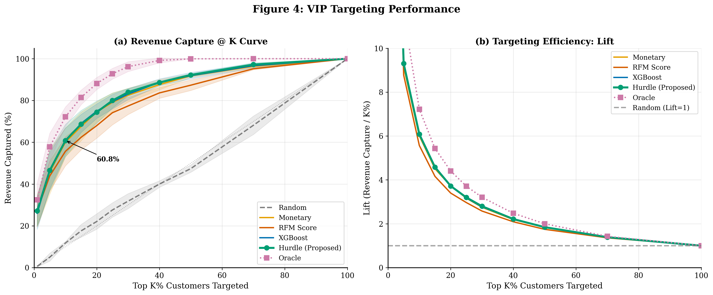
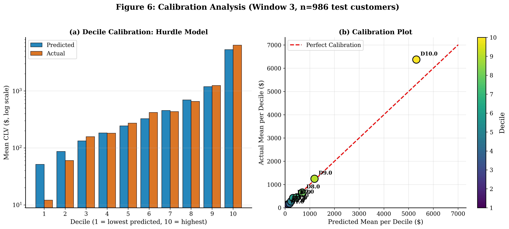
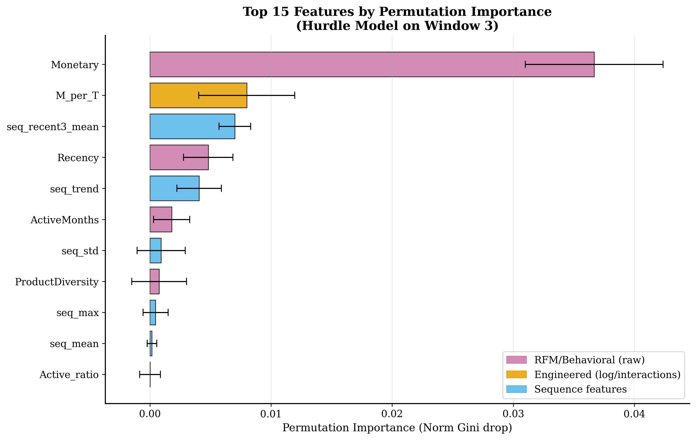
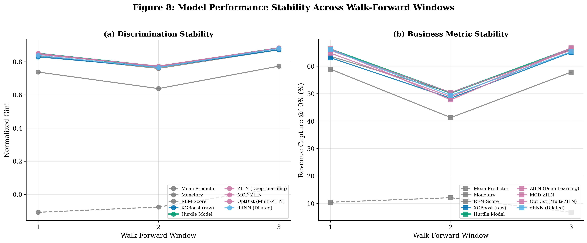
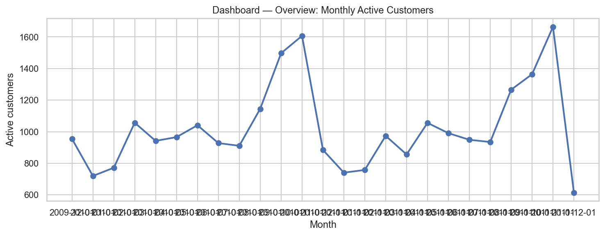
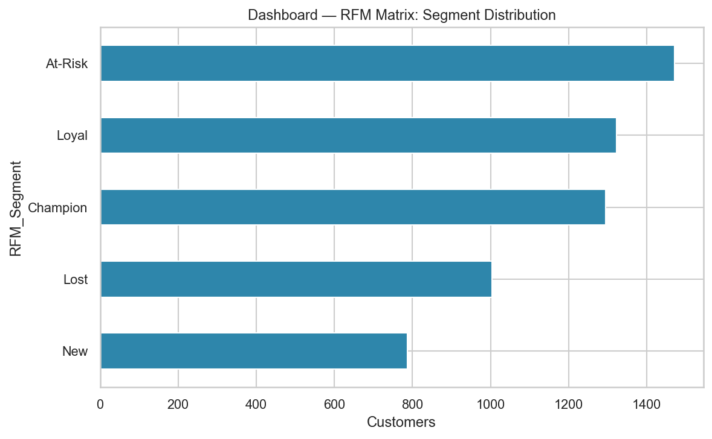
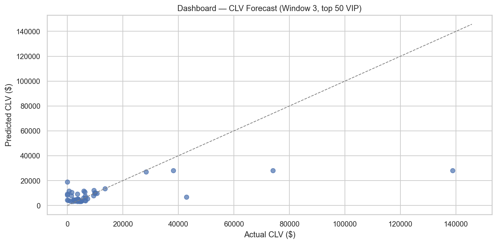
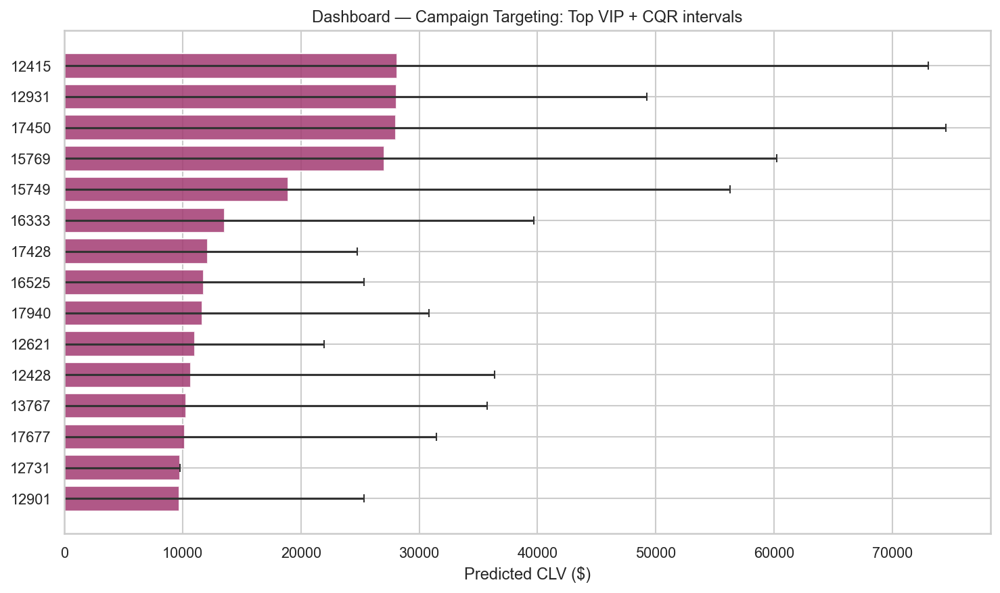

A leakage-free, two-stage Hurdle framework that ranks the top-10% of customers by future value — benchmarked across 17 models, calibrated with conformal intervals, and explained with SHAP.
Every chart below is fully interactive: click a legend item to hide/show a series, double-click to isolate it, drag to zoom, hover for exact values. Upload an Online Retail II CSV/Excel file and the whole dashboard is recomputed live in your browser (RFM, segments, revenue, distributions) — nothing is sent to a server.
Expected columns: Invoice, StockCode, Quantity, InvoiceDate, Price,
Customer ID, Country (column order/case is flexible). Large files parse in a few seconds.
▶ Try it: download a demo file (non-UK transactions, 4.4 MB)
and upload it — every chart and KPI recomputes for that data.
Marketing budgets are constrained, yet a small fraction of customers drives most of the revenue. We reframe Customer Lifetime Value (CLV) prediction as a top-K ranking problem: identify the customers most likely to deliver the highest future revenue so retention spend can be concentrated on them.
“Which top 10% of customers will capture the maximum future revenue share?”
Sourced from the UCI Machine Learning Repository: a UK-based non-store online retailer, December 2009 – December 2011. Accounts without a registered identifier are discarded to preserve sequence-tracking integrity.
Strict walk-forward windows emulate production: features are computed only before the split, targets reside strictly after. Window 3 (18-month observation / 6-month horizon) is the primary deployment setting.

Rather than claim dramatic supremacy, the proposed Hurdle model tracks the ranking performance of complex deep-learning alternatives while keeping the model fully explainable. Metrics are mean ± std across walk-forward folds.

| Model | MAE | R² | Norm. Gini | Revenue@10% | Lift@10% |
|---|---|---|---|---|---|
| Hurdle Model (proposed) | 449.5 | 0.494 | 0.834 | 60.96% | 6.10× |
| ZILN (Deep Learning) | 617.7 | −5.35 | 0.833 | 60.20% | 6.02× |
| Hurdle + Sequence | 456.9 | 0.478 | 0.833 | 59.58% | 5.96× |
| XGBoost (raw) | 449.8 | 0.537 | 0.822 | 58.85% | 5.88× |
| Monetary baseline | 522.4 | 0.022 | 0.822 | 60.02% | 6.00× |
| Linear Regression | 456.0 | 0.587 | 0.810 | 60.55% | 6.06× |
| RFM Score | 707.0 | 0.047 | 0.716 | 52.68% | 5.27× |
| BG/NBD + Gamma-Gamma | 549.9 | 0.667 | 0.485 | 3.23% | 0.32× |
Note: BG/NBD attains the best raw R² but ranks poorly (NG 0.485) — confirming that raw error metrics are misleading on a zero-inflated label. Ranking metrics drive model selection.

| Strategy | Revenue captured | % total |
|---|---|---|
| Random selection | $454,138 | 11.07% |
| ML prediction (Hurdle) | $2,578,680 | 62.85% |
| Oracle (perfect) | $2,915,150 | 71.06% |
Net profit lift +513% vs random ($292,315 vs $47,706) · Precision@Top-10% = 0.597.



A four-page dashboard turns predictions into marketing actions: business overview, RFM matrix drill-down, CLV forecast with calibrated intervals, and a live campaign-targeting simulator with CSV export.




All results are reproducible from the GitHub repository via the documented pipeline scripts.